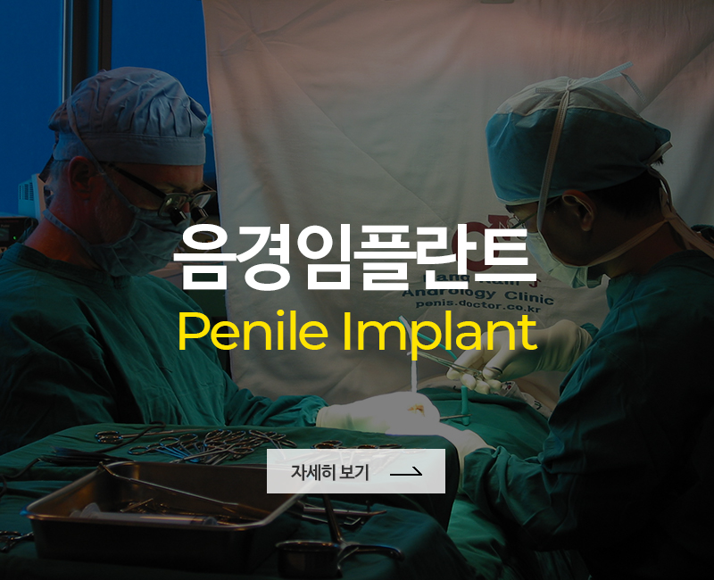

01 · Signature
01 · Signature강남J비뇨기과 시그니처
1999년부터 이어온 남성의학 전문 클리닉의 품격을 담았습니다.
1999년부터 이어온 남성의학 노하우와 독립된 프라이버시 진료 시스템을 소개합니다.
1999년 6월부터 하루도 빠지지 않고 직접 의료상담을 이어오며 환자들이 진정으로 원하는 치료를 연구해왔습니다.

비뇨기과학은 남성에서 비뇨기관·부신 및 남성생식기관, 여성에서 비뇨기관·부신의 외과적 질환을 다루는 전문분야입니다. 많은 분들이 비뇨기과 질환(남성의학, 여성 요실금 질환)에 대한 정확한 정보를 획득해서 최선의 진료를 받도록 돕는 것이 우리 병원의 존재 이유입니다.
특히 모든 수술을 적용할 때 3S(Safe · Simple · Speed) 및 No3(No pain · No bleeding · No complication) 원칙에 충실합니다. 원장이 직접 설계·제작한 2대의 첨단 자외선·고압 소독기와 수술기구를 사용하여 불필요한 dead time 없이 간결하게 시행합니다.
연세대학교 의학과 졸업 · 연세의대 외래교수 · 국군수도통합병원 비뇨기과장 · 대한비뇨기과학회 학술위원/정회원 · 대한남성과학회 정회원 · 대한전립선학회 정회원 · 미국비뇨기과학회(AUA) 정회원
Boston Scientific Korea 음경임플란트 프록터(Proctorship in penile implant) · Lumenis USA HoLEP Expert · 남성의학 및 전립선·요로결석 수술 다수 집도
병은 소문을 내라고 했습니다. 그러나 누구에게 아무나 문의할 수 없는 일이기에 세심한 프라이버시 시스템을 마련했습니다.
| 요일 / 구분 | 진료 및 상담 시간 | 비고 |
|---|---|---|
| 월 · 화 · 목 · 금 | 09:00 ~ 12:00 (오전예약진료) / 14:00 ~ 17:00 | 오전은 100% 예약제 · 오후 예약우선제 |
| 수요일 | 휴진 | 정기 휴진 |
| 토요일 | 09:00 ~ 12:30 | 12:30 마지막 진료접수 |
| 점심시간 | 13:00 ~ 14:00 | - |
| 공휴일 · 일요일 | 휴무 | - |
| 전화 · 카톡 상담시간 | 월~금 09:00 ~ 18:00 / 토요일 09:00 ~ 13:00 | 상담시간 외 문자(010-9190-7575) 시 순차 답변 |
타인의 시선에서 자유로운 동선과 쾌적한 멸균 수술센터를 둘러보세요.
01 · Signature1999년부터 이어온 남성의학 전문 클리닉의 품격을 담았습니다.
 02 · Entrance
02 · Entrance엘리베이터에서 내리면 바로 연결되는 독립된 병원 출입구입니다.
 03 · Lounge
03 · Lounge차를 마시며 편안히 대기할 수 있는 거실 같은 분위기와 독립 상담실입니다.
 04 · Clinic Zone
04 · Clinic Zone프라이버시 침해 없이 충분한 시간 동안 1:1 진료를 받을 수 있습니다.

05 · Operating Center자체 첨단 소독기와 생체 활력증후 모니터링 장비를 갖추고 있습니다.
 06 · Building
06 · Building7호선 학동역 8번·9번 출구 사이, 지하주차장을 완비한 빌딩 4층입니다.
국내외 비뇨의학과 전문의들을 대상으로 음경임플란트 및 HoLEP 술기 교육과 라이브 서저리를 진행해왔습니다.
국내 비뇨의학과 의료진에게 3-Piece 팽창형 음경임플란트 수술 노하우를 전수하는 공식 프록터로 활동합니다.
거대 전립선비대증의 표준 치료법인 홀렙(HoLEP) 시술의 정밀한 술기와 합병증 예방 노하우를 강의합니다.
대한비뇨기과학회, 남성과학회, 아시아-태평양 성의학회 등에서 지속적인 술기 시연과 학술 발표를 이어갑니다.
기존 7개 카테고리(전립선, 요로결석, 음경임플란트, 남성성형, 성기능, 정관·포경, 방송) 영상 콘텐츠를 안내합니다.
전립선비대증의 원인부터 홀렙 레이저 적출 원리, Combi-Operation까지 영상으로 쉽게 설명합니다.
세조각 팽창형 보형물의 작동 원리와 무균 수술 시스템, 사후 관리 방법을 안내합니다.
대표전화: 02-3018-7575
문자·카톡상담: 010-9190-7575 (ID: gnjurology)
해외상담: 82-2-3018-7575 / 82-10-9190-7575
FAX: 02-516-2030
주소: 서울시 강남구 학동로 203 4F
지하철: 7호선 학동역 8번·9번 출구 사이
주차: 건물 내 충분한 지하 주차장 이용 가능
기존 홈페이지(nonbenefit.html) 기준 수술 · 주사 · 검사 · 제증명수수료 · 입원 5개 분류 전체 비급여 항목 및 비용 안내입니다.
| 구분 | 항목 | 세부 내역 | 비용 |
|---|---|---|---|
| 음경만곡증교정술 | 음경만곡증교정술 (주름법) | - | 300~600만원 |
| 음경만곡증교정술 (기하학적 백막이식수술) | - | 600~1,200만원 | |
| 음경보형물삽입수술 | 굴곡형 | - | 700만원 |
| 팽창형 | - | 1,500만원 | |
| 전립선 | 전립선비대증 결찰수술 | 유로리프트 | 400~1,600만원 |
| 음경이물질제거수술 | 바세린 / 파라핀 | - | 500~1,000만원 |
| 지방 / 진피 / 필러 | - | 300~600만원 | |
| 피판술 | 상/하부 물갈퀴음경교정술 | - | 200만원 |
| 음낭터널피판술 | - | 300만원 | |
| 피부결손으로 인한 피판술 | - | 300만원 | |
| 음경확대수술 | 국산 동종진피 | - | 350만원 |
| 수입 동종진피 | - | 700만원 | |
| 히알루론산필러 | - | 150만원 | |
| 귀두직하확대수술 | - | 300만원 | |
| 함몰음경교정술 | 외부근막고정술 | - | 150만원 |
| 치골지방제거술 | - | 300~500만원 | |
| 조루수술 | 배부신경차단술 | - | 80만원 |
| 포경수술 | 소매법 디자인 포경수술 | - | 80만원 |
| 귀두포피유착박리 특수포경수술 | - | 80만원 | |
| 포피소대성형술 | - | 80만원 | |
| 베이스라인 포경수술 | - | 150만원 | |
| 정관수술 | 무도정관수술 | - | 50만원 |
| 실리콘링 | C자형 | - | 60만원 |
| T자형 | - | 120만원 |
| 구분 | 항목 | 비용 |
|---|---|---|
| 회복/면역주사 | IVC / IVNT (회복/면역주사) | 50~100만원 |
| 호르몬 | 남성호르몬 보충요법(센비도) | 30만원 |
| 예방접종 | 가다실 9 | 회당 20만원 |
| 국소마취 | 요도마취(11ml) | 6만원 |
| 구분 | 항목 | 비용 |
|---|---|---|
| 성기능 | 성기능검사 | 35만원 |
| 초음파/혈류 | 음경혈관 도플러검사 | 20만원 |
| 전립선 | PHI (Prostate Health Index) | 20만원 |
| 바이러스 | HPV 항원검사 | 16만원 |
| 혈액 | 혈액검사 | 5~10만원 |
| 발기검사 | 인공발기 | 5만원 |
| 호르몬 | Testosterone 검사 | 3만원 |
| 호르몬 종합 | 남성호르몬 종합혈액검사 | 10만원 |
| 감각검사 | 진동각검사 | 3만원 |
| 정액 | 정액검사 | 3만원 |
| 구분 | 항목 | 비용 |
|---|---|---|
| 진단/처방 | 진단서 / 소견서 / CD / 일반처방전 | 1만원 |
| 확인서 | 수술확인서 / 입퇴원확인서 | 3천원 |
| 사본 | 진료기록사본 | 1천원 |
| 구분 | 항목 | 비용 |
|---|---|---|
| 병실료 | 상급병실(1인실) | 40만원 |